LauraStar LIFT RED
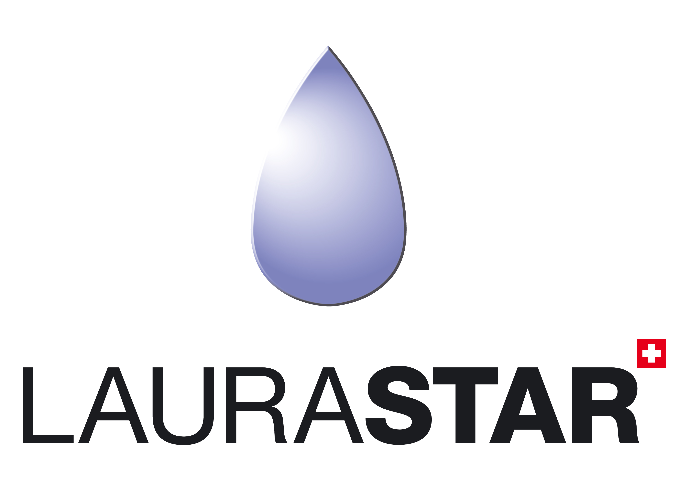Глажение одежды – не самая любимая работа по дому для многих хозяек. Это монотонный и вместе с тем непростой домашний труд, которого не избежать. Именно поэтому швейцарская компания LauraStar разработала парогенераторы, способные изменить Ваше отношение к процессу глажения одежды и превратить эту обязанность в удовольствие. LauraStar поможет Вам сэкономить время и приятно удивят своими преимуществами перед обычными способами глажки!
Компактные габариты
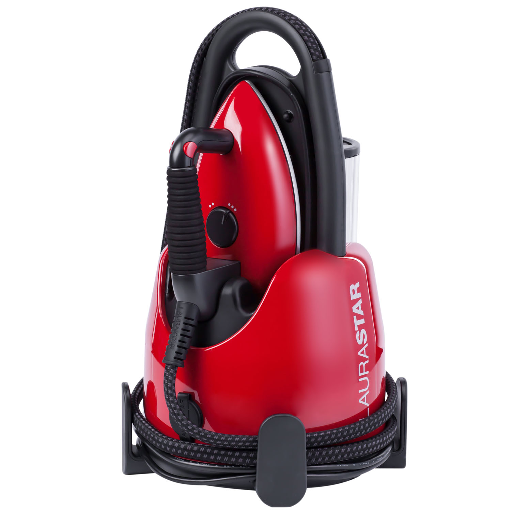Несмотря на впечатляющую эффективность, профессиональный парогенератор Laurastar отличается небольшими размерами и весом. Это существенно облегчает процесс его использования. Кабель питания и паропровод удобно сматываются вокруг корпуса. Удобная ручка в верхней части позволяет переносить парогенератор одной рукой.
Быстрое время нагревания
LauraStar Lift Red нагревается всего за 3 минуты. А если вы забыли выключить парогенератор, то он выключится автоматически после 10 минут нахождения без действия для вашей безопасности и экономии энергии.
Постоянная подача пара
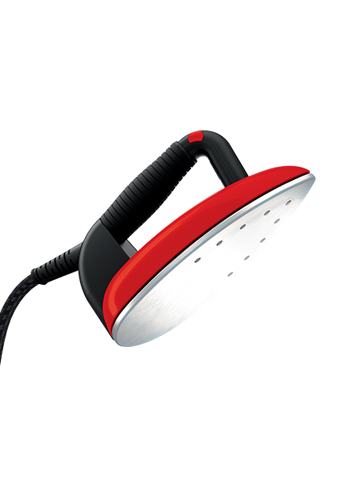Объём бойлера в парогенераторе LauraStar - 400 мл., специальный датчик контролирует уровень воды, при её снижении в бойлере до отметки 350 мл. включается автоматическая подкачка воды, это гарантирует постоянную подачу пара.
Неограниченное время глажения
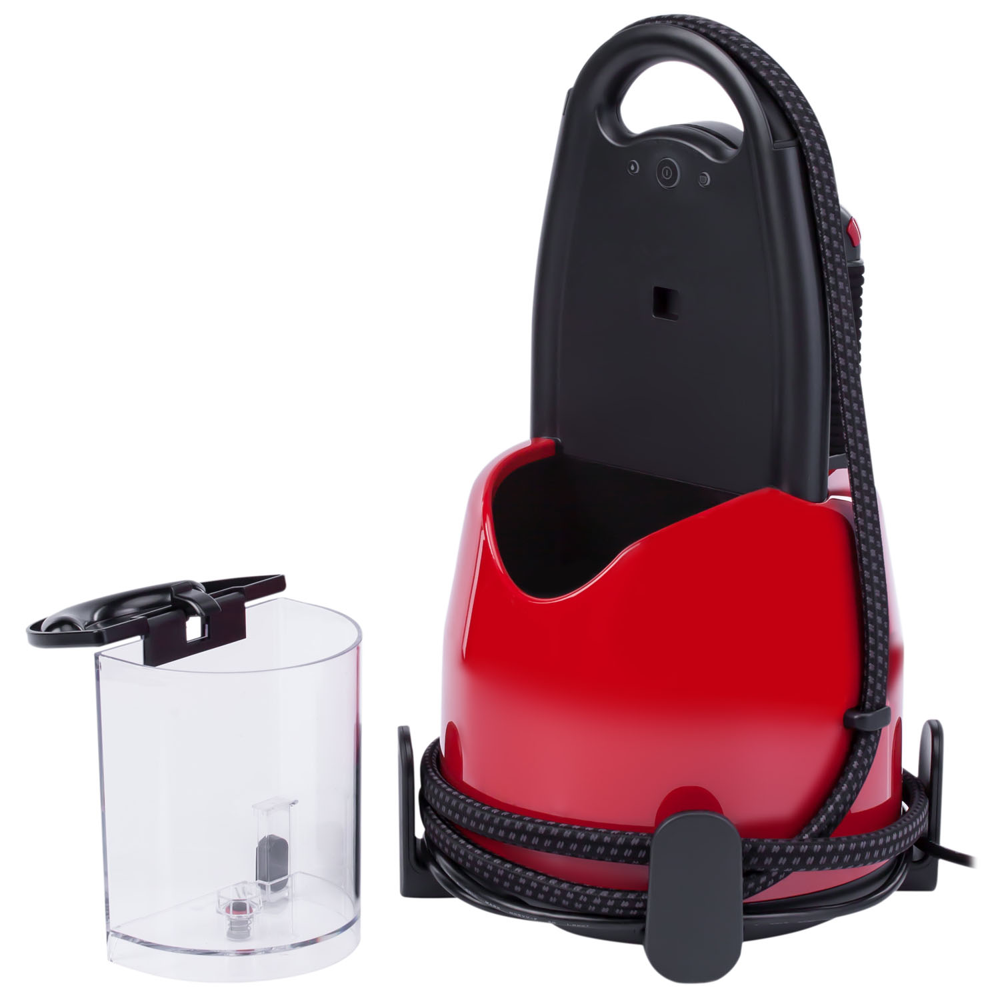Теперь можно доливать воду в систему непосредственно в процессе глажения, используя съемный резервуар для воды. Благодаря этому время глажения становится неограниченным. Звуковой сигнал и красная лампочка-индикатор предупреждают, что резервуар пуст. Объём резервуара для воды 1,1 л.
Высокотемпературный мелкодисперсный пар
 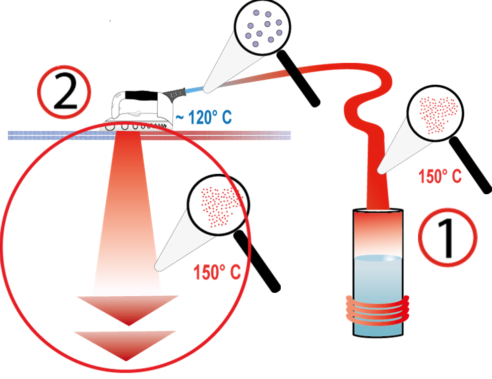
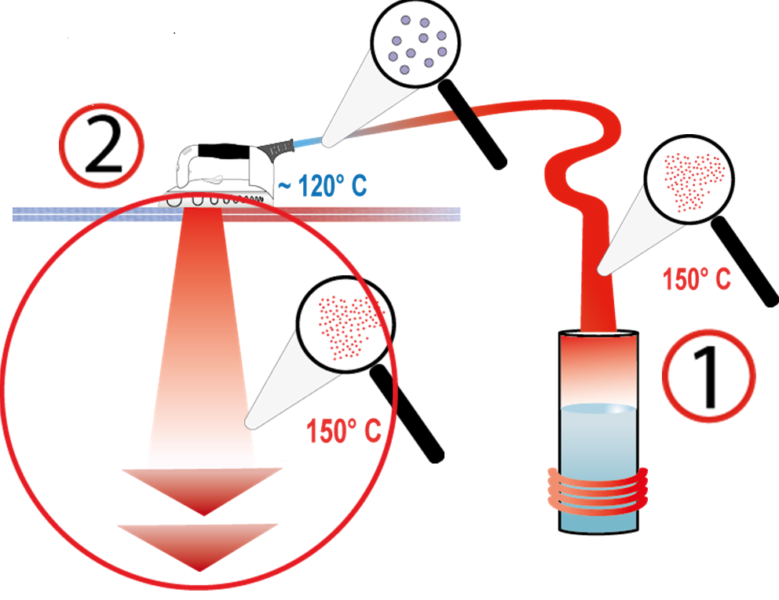
Клапан в бойлере открывается при нагреве пара до 150°C, далее двигаясь по трубке к утюгу, он остывает до 120°C. В подошве утюга LauraStar находится запатентованный паровой лабиринт длинной 1,5 метра, который подогревает пар до 150°C, параллельно увеличивая его в объёме на 170%. На выходе получается, рассеивающий, ультратонкий, но мощный пар, который адаптируется под все виды тканей и позволяет отпаривать вещи вертикально. Преимущество сухого пара заключается в том, что он способен проникать в глубь белья эффективно разглаживая даже самые сильные замятия.
Постоянное давление пара 3 5 бар

LauraStar указывает профессиональную характеристику - постоянное давление пара на выходе из утюга - 3.5 бар. и производит 200 литров пара в минуту. В то время, как конкуренты указывают максимальное давление в бойлере.
Облегченный профессиональный утюг
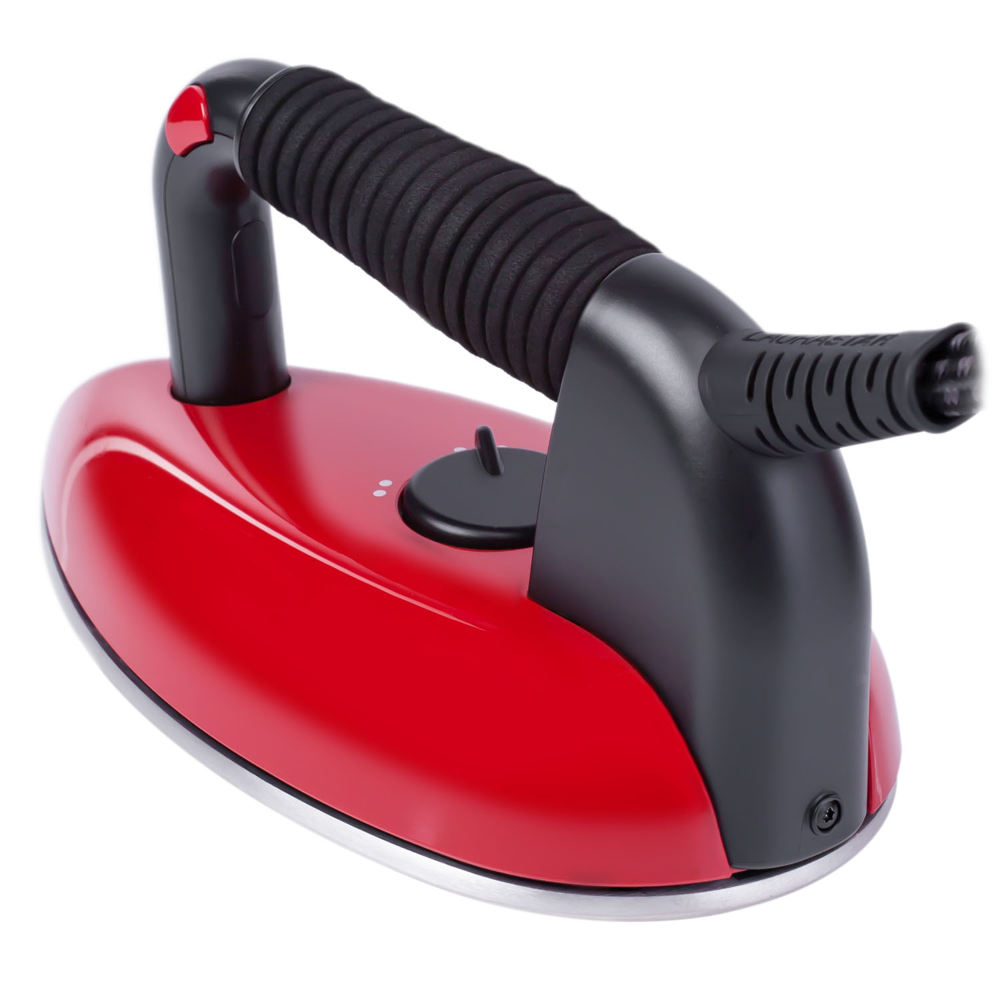Гладильная система комплектуется профессиональным облегченным утюгом, выполненным из композитных материалов, для более комфортного и менее затруднительного процесса глажения. А его округлая форма позволяет предотвратить нежелательные складки. Вес утюга – 1 кг.
Максимальное удобство
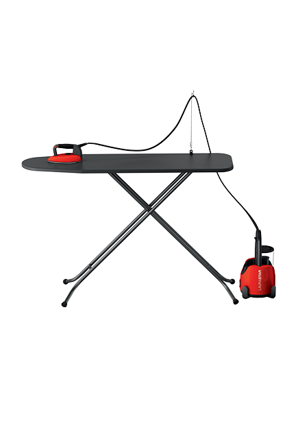Эргономичная пробковая ручка, с антибактериальным покрытием, позволяет удобно удерживать утюг и не вызывает затекания даже после долгого использования. Кнопки для подачи пара располагаются с двух сторон, чтобы глажение было комфортным для правшей и левшей. Длина парового шланга 2 метра, это позволяет размещать парогенератор прямо на полу.
Профессиональная подошва
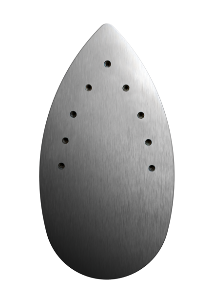Подошва утюга сделана в форме капли, что повышает эффективность глажения исключая замятия ткани. Материал подошвы - алюминий, как во всех профессиональных станциях. Алюминий быстро набирает необходимую температуру и максимально равномерно поддерживает её по всей подошве. Стойкие пятна можно удалить с помощью абразивной губки для посуды или специального очистителя подошвы – POLYFER. После этого удалите оксид алюминия с подошвы при помощи влажной тряпки. Отверстия для подачи пара находятся в верхней части подошвы, таким образом проводя утюгом вперёд, Вы изначально увлажняете ткань, делая её более податливой и задней частью подошвы тут же высушиваете, запечатывая идеальный результат глажения.
Насадка для деликатных тканей SOFTPRESSING
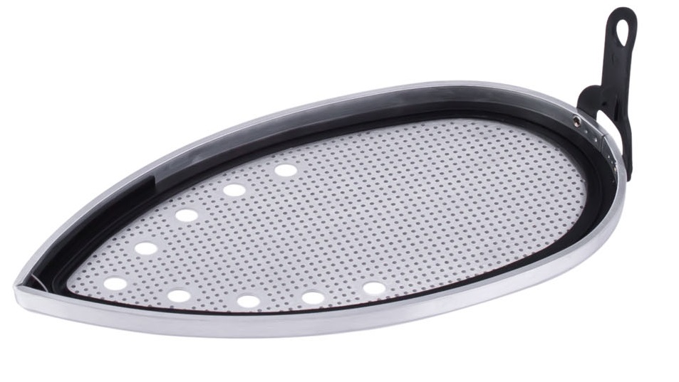Разработанная швейцарскими инженерами Laurastar, тефлоновая насадка защищает деликатные ткани и предотвращает появление блестящих следов на темных и костюмных тканях. Благодаря специальному покрытию, которое снижает температуру на поверхности подошвы утюга, насадка позволяет свободно гладить деликатные ткани, например, шелк, который чувствителен к нагреванию, пуговицы, бисер, прорезиненные наклейки. Тефлоновая насадка легко надевается на утюг. Вставьте переднюю часть утюга в носик насадки под проволочную перегородку, зафиксируйте утюг в насадке, слегка прижав. Подождите примерно 1 минуту, пока насадка не достигнет нужной температуры для деликатного глажения. Профессиональные системы, никогда не используют антипригарного напыления на подошве, так как оно достаточно быстро царапается, и приходит в негодность.
Силиконовый коврик
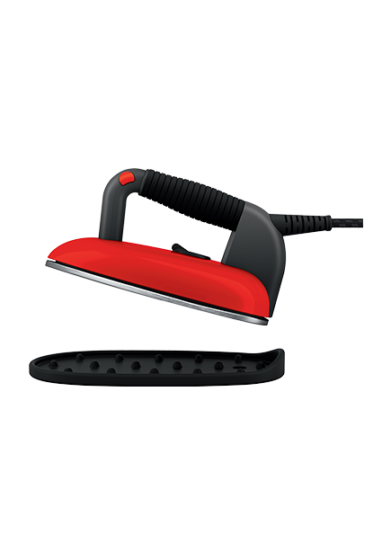Специальный изолирующий коврик позволяет безопасно ставить горячий утюг на термостойкую подставку, располагая её там, где Вам удобно. Нет необходимости возвращать утюг на базу каждый раз, когда необходимо поправить бельё для дальнейшего глажения. Горизонтальное хранение утюга является более устойчивым, а как следствие и более безопасным. Силиконовый коврик удобно хранится под утюгом в сложенном состоянии.
Картридж для воды LAURASTAR
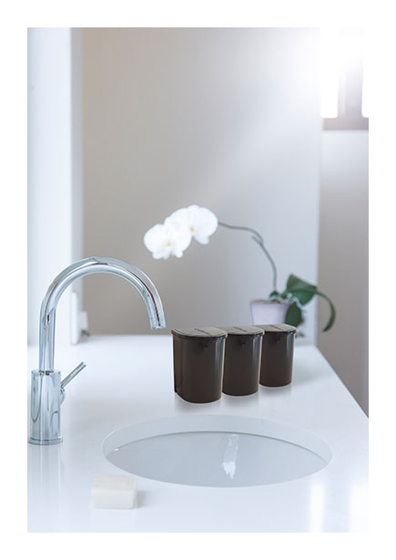Парогенераторы LauraStar рассчитаны на использование воды из водопровода. Прилагаемый картридж предназначен для очистки воды от лишних примесей. Аксессуар продлит срок эксплуатации утюга, улучшит качество пара, не допустит образования накипи, поможет избежать возможных поломок и выхода техники из строя. О необходимости замены картриджа вас предупредит индикатор парогенератора. В комплекте 3 картриджа. В случае использования парогенератора без картриджа, очистку от накипи необходимо проводить раз в месяц.
Технические характеристики
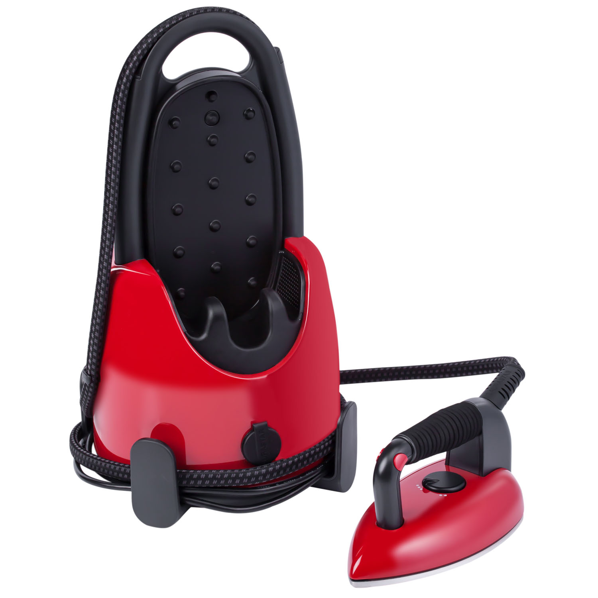
Мощность: 2200 Вт
Время подготовки к работе: 3 мин
Давление пара: 3.5 бар
Объем емкости для воды: 1.1 л
Длина сетевого шнура: 2.3 м
Длина парового шланга: 2 м
Автоотключение: 10 мин
Размеры (ВхШхД): 45х28х28 см
Вес утюга: 1 кг
Вес общий: 5.5 кг
Цвет: красный
Гарантия: 12 мес.
Страна изготовитель: Португалия